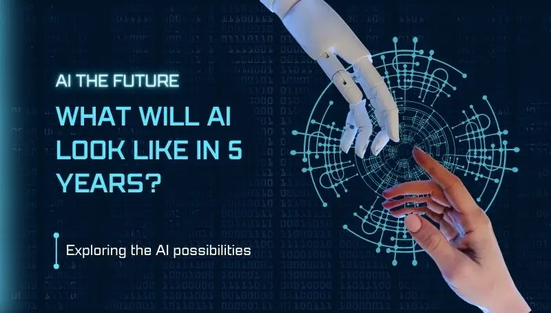

The Future of AI: Transforming Our Digital Landscape
Artificial Intelligence (AI) has come a long way since its inception, and its future promises even more groundbreaking developments. As we stand on the cusp of a new era in technology, let's explore how AI is set to reshape our digital world and beyond.
1. Hyper-Personalization in User Experience
AI is poised to take personalization to new heights. From e-commerce to content streaming, AI algorithms will create highly tailored experiences for each user. Imagine a world where your devices anticipate your needs before you even realize them, providing suggestions and solutions that feel almost prescient.